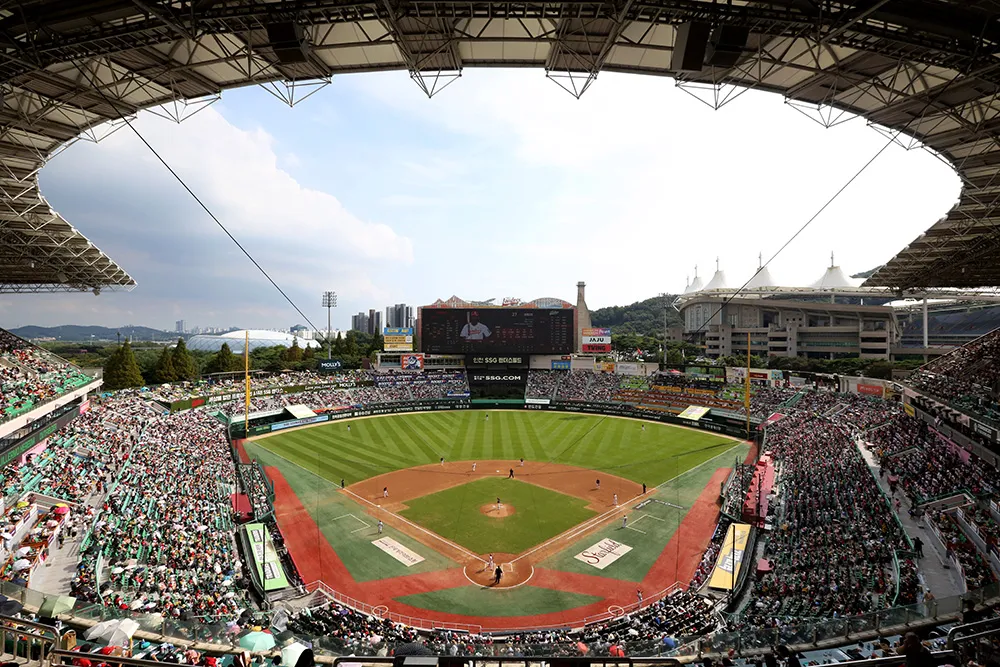

인천 랜더스필드는 인천광역시 미추홀구에 위치한 SSG 랜더스의 홈구장입니다. 2002년 개장 이후 인천 야구팬들의 열정적인 응원 문화로 유명하며, 특유의 열기가 가득한 구장 분위기가 매력입니다.
SSG(신세계) 그룹의 운영하에 구장 내 편의시설이 꾸준히 업그레이드되어 왔으며, 다양한 F&B 옵션과 쾌적한 관람 환경을 자랑합니다. 외야석의 응원 열기는 KBO 최고 수준이라는 평가를 받고 있습니다.
인천 지역의 유일한 KBO 구장으로서 지역 팬들의 자부심이 강하며, 시즌 홈 경기는 인천 문화 행사의 일부로 자리 잡았습니다. 경기 후 인근 차이나타운과 개항로 거리를 둘러보는 코스도 추천합니다.
SSG의 열정적 응원
인천 팬들의 응원 문화는 KBO에서도 손꼽힐 만큼 열정적입니다. 외야석의 함성은 압도적입니다.
신세계 운영 편의시설
SSG(신세계) 그룹이 운영해 F&B 퀄리티와 매점 서비스가 우수합니다. 먹거리 선택지가 풍부합니다.
천연잔디 구장
쾌적한 천연잔디 경기장으로, 실제 야구 경기의 감성을 가장 자연스럽게 느낄 수 있습니다.
KBO 강팀의 홈
SSG 랜더스는 KBO 상위권 팀으로, 높은 수준의 경기를 기대할 수 있는 구장입니다.
대중교통 접근 양호
지하철 1호선 도화역에서 도보로 이동 가능. 인천 지역 교통망과 연계가 잘 되어 있습니다.
인천 관광 연계
경기 후 인근 차이나타운, 개항로, 송도 등 인천의 명소들을 함께 즐길 수 있습니다.
미엄
프리미엄 테이블석
내야 최상급 좌석. 테이블이 제공되어 편안하게 식사하며 관람할 수 있습니다.
지정석
내야 지정석
1루·3루 라인 내야석으로 경기를 생생하게 관람할 수 있는 인기 좌석입니다.
응원석
외야 응원석
인천 팬들의 폭발적인 응원과 함께하는 외야석. 뜨거운 열기를 직접 느낄 수 있습니다.
지정석
중앙 지정석
포수 뒤편 중앙에서 균형 잡힌 시야로 경기를 감상할 수 있습니다.
교통편
1호선 도화역 1번 출구 도보 10분
인천 방면 버스 — 랜더스필드 하차
"인천SSG랜더스필드" 검색 — 정문 하차
주차 & 현장 팁
구장 인근 주차장 이용 가능, 경기일 혼잡 예상
경기 1시간 30분 전 도착 권장
경기 후 차이나타운 방문 추천. 짜장면·탕수육 맛집이 즐비합니다.
치킨
SSG 계열 F&B 브랜드와 유명 치킨 브랜드가 입점. 퀄리티 높은 치킨을 즐길 수 있습니다.
만두·분식
인천 특색이 담긴 분식류가 인기. 따끈한 만두와 떡볶이는 직관 필수 간식입니다.
컵밥
다양한 토핑의 컵밥으로 간편하게 한 끼. 경기 관람 중 먹기 편한 메뉴입니다.
맥주
캔맥주와 생맥주 모두 판매. 인천 팬들의 열정적인 응원과 함께하면 더욱 맛있습니다.
핫도그·소시지
다양한 종류의 핫도그가 매점에서 판매됩니다. 부담 없이 즐길 수 있는 기본 메뉴입니다.
아이스크림
여름 경기 필수 아이템. 구장 내 다양한 아이스크림 메뉴로 더위를 식히세요.